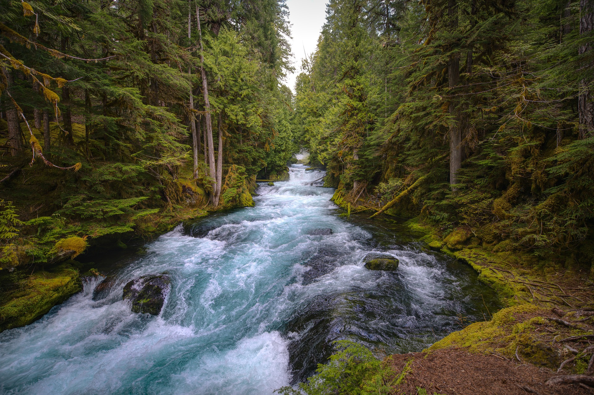

David River
The David River is the perfect river for those looking for high adventure! With a lot of waves and beautiful clifs surrounding both sides, there are plenty of activites for those who are more experienced.
McKenzie River
The McKenzie River is a simplier river to raft down for those who aren't as enthusiastic about rafting. With gentle waves and small rocks to easily navigate around, this river is a walk in the park!